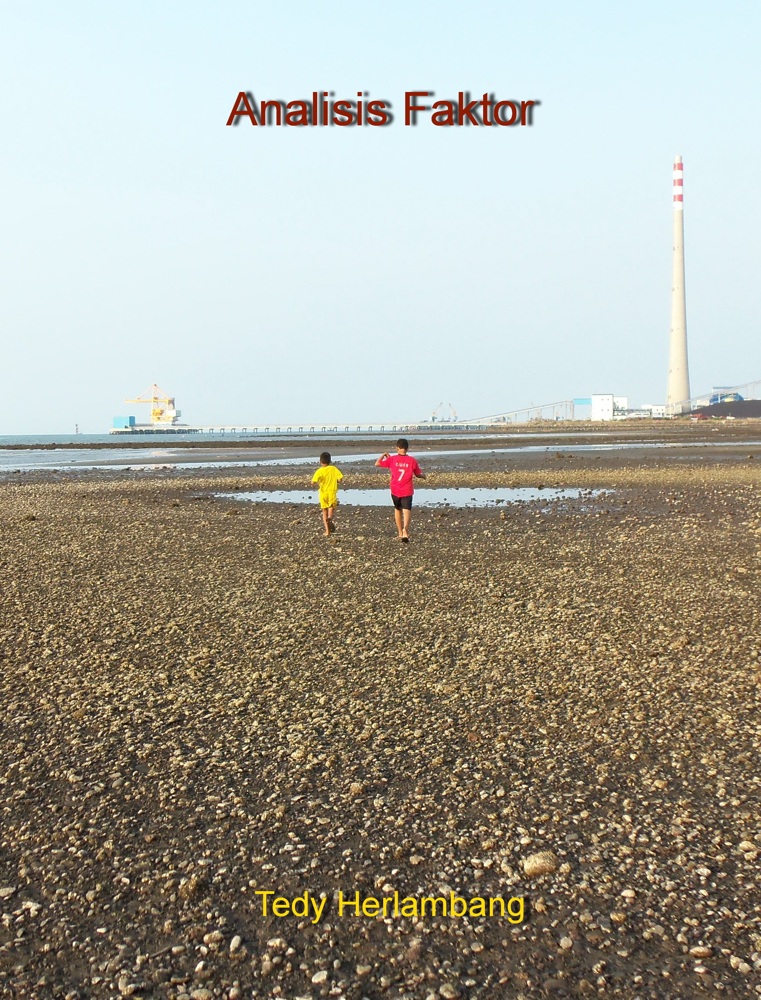

Analisis Faktor
2021-11-17
Kata Pengantar

Terakhir diperbarui pada: 17 Nov 2021.
work in progress
Analisis Faktor is copyrighted by Tedy Herlambang and distributed under a Creative Commons BY-NC-ND 4.0 International License. You may freely share this content for non-commercial purposes, with a source credit to https://bangtedy.github.io/analisisfaktor.
Disclaimer
The information is this book is provided without warranty. The authors and publisher have neither liability nor responsibility to any person or entity related to any loss or damages arising from the information contained in this book.